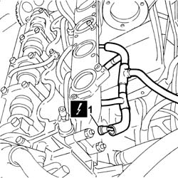
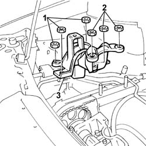
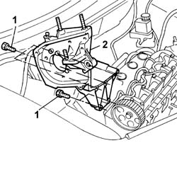

1060A71 injection pump mount r r with injection pump removed
- Path
- Procedures > 10 ENGINE > 1060 DIESEL FUEL INJECTION > 1060A diesel injection pump and control > 1060A71 injection pump mount r r with injection pump removed
- Kind
- repair procedure (removal / refitting; the operation number is the code)
- Applies to
- all engines; all production periods
- Interactive page
- https://sloeber94.github.io/elrnDB-fDbl/en/#/2584460
Applies to: all engines; all production periods
 Removing
Removing
 Refitting
Refitting1. Disconnect the electrical connections for the heater plugs.
2. Place the supply cables for the heater plugs at the side.
 | Name | Connector |
|---|---|---|
1 | Heater plugs | A40 |

Applies to: all engines; all production periods
Position a hydraulic jack beneath the engine to support it.
1. Undo the three nuts securing the mount to the body.
2. Undo the two nuts securing the mount to the engine.
3. Remove the engine mount, timing side.

Applies to: all engines; all production periods
1. Unscrew the retaining bolts
2. Remove the injection pump mount.

Applies to: all engines; all production periods
Refitting
RemovingFit the injection pump support into its housing and tighten the crankcase securing bolts
 | Fastening | Component | Ø | Value (daNm) |
|---|---|---|---|---|
- | Bolt | DIESEL INJECTION PUMP MOUNTING | M8 | 2.5 |
Fit the timing side engine mount by screwing in the nuts securing it to the body and engine without tightening them.
Remove the hydraulic lift from beneath the engine.
Position the wiring for the spark plugs and connect the connections to the actual plugs.
| Name | Connector |
|---|---|---|
- | Heater plugs | A40 |